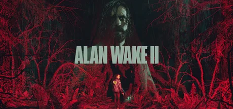

Remedy Entertainment 开发的第三人称生存恐怖游戏。惊悚小说家 Alan Wake 困于黑暗之地 13 年后，FBI 探员 Saga Anderson 来到亮瀑镇调查仪式谋杀案，两条平行叙事线交织。TGA 2023 最佳游戏指导/叙事/艺术指导三项大奖。
想象你是一个被困了 13 年的惊悚小说家——四周是永远天黑的超现实纽约，街道根据你的恐惧变形，霓虹灯在雾里一闪一灭。你发现了一个规则：写下的文字会变成现实。于是你开始写恐怖小说——不是为了出版，是为了改写囚禁你的世界。但每写一段你就陷得更深：小说在写你，还是你在写小说？
千里之外的华盛顿州 Bright Falls，FBI 探员 Saga Anderson 正在调查仪式谋杀案——死者被摆成诡异姿势，现场散落着手稿页。她很快发现这些手稿出自 13 年前失踪的作家 Alan Wake，而案件每个细节都与手稿精确对应。线索板上照片越来越多，但每条都指向一个不可能的结论：凶手是被困在另一维度的人，他正在通过写作杀人。
两条线交汇时你发现了真正令人不安的东西——Alan 写下「探员走进湖边小屋」，你切到 Saga 视角她确实站在那扇门前。Saga 的调查、Alan 的小说、你手中的控制器三者边界正在模糊。当你操控 Saga 时，是你在玩游戏，还是Alan 在写你？
北欧黑暗叙事 × 大卫·林奇，把芬兰式心理恐怖（冷冽、克制、不安）和大卫·林奇的超现实影像语法（梦境逻辑、身份分裂）塞进第三人称生存恐怖。底色是太平洋西北的阴冷自然——松林浓雾、黑水湖泊、霓虹加油站；变异在于随时滑入 Dark Place 的超现实纽约。色彩 DNA 锁定胶片暖黄 + 超自然冷蓝。
心理恐怖视觉演化跨越 30 余年。1990 年《双峰 Twin Peaks》定义了「小镇超自然悬疑」影像母版。2001 年《寂静岭 2》把心理恐怖游戏推向巅峰；同年林奇的《穆赫兰道》以梦境嵌套重定义恐怖。2010 年初代 Alan Wake 将太平洋西北 + 手电筒 + Stephen King 惊悚融为一体。2019 年《Control》用 SCP 式官僚体系建立 Remedy 宇宙视觉基石。Alan Wake 2 是集大成——Northlight 引擎 + 真人影像 + 双线叙事，把 30 年遗产推向新高度。
基于体验清单 · 审美偏好 · IP故事三维度综合选出
点击链接跳转到对应平台查看 · 仅整理外部链接